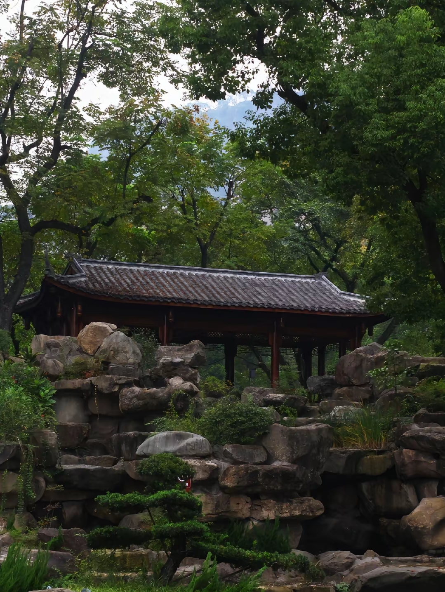

全国名园 · 国家AAA级旅游景区 · 重庆首批历史名园 · 万州百年城市记忆
西山公园位于重庆市万州区主城西南端长江畔，背靠太白岩，面临长江，因明代在此兴建"西山观"而得名。公园始建于1924年（初名万县商埠公园），由当时驻扎万县的军阀杨森筹建，1928年正式定名"西山公园"并沿用至今，是长江沿岸建园历史最悠久的公园之一，也是全国最早著名公园之一、全国著名古茶花园之一[reference:0]。
历经百年沧桑，西山公园先后更名多次：1926年因"九五惨案"更名为"9.5公园"（朱德曾亲笔题写匾额），1928年为纪念北伐战争胜利更名为"中山公园"[reference:1]。1999年被中国公园协会评为"中国名园"，2021年入选重庆市首批历史名园名录，2023年获评"重庆市重点公园"和"国家AAA级旅游景区"，2026年西山公园——钟楼片区获评市级历史文化街区[reference:2][reference:3]。园内完整保存着西山钟楼（全国重点文物保护单位）、库里申科陵墓（全国重点烈士纪念建筑）、抗战阵亡将士纪念碑等核心文保单位[reference:4]。
公园占地面积约600亩（约40公顷），园区地形呈南北向狭长型，最高点海拔233米，最低点海拔175米[reference:5]。园内植物资源极为丰富，有95科、160属、320多种观赏花木，以亚热带常绿阔叶混交林为主，保存有4项重庆市古树名木之最，其中300年以上树龄的古茶树23株、500余个山茶品种获国际茶花协会认证，2016年获评"国际杰出茶花园"[reference:6][reference:7]。
公园面积
始建时间
观赏花木
国家级景区等级
明代在此兴建"西山观"，西山公园名称即由此而来。公园历史可追溯至此。
公园初建，定名"万县商埠公园"，由驻扎万县的军阀杨森筹建，杨森军部秘书兼万县商埠局秘书长李寰担任公园管理所所长[reference:8]。
川军老将王陵基为新园区题词"西山"，公园更名为"西山公园"并沿用至今[reference:9][reference:10]。
英舰炮轰万县造成"九五惨案"，公园更名为"9.5公园"，朱德总司令亲笔题写匾额[reference:11]。
为纪念北伐战争胜利，公园更名为"中山公园"[reference:12]。
钟楼始建于1930年，1932年8月落成，通高50.24米，共12层，与上海海关钟楼、武汉江汉关钟楼并称长江沿岸三大钟楼[reference:13]。
苏联援华空军志愿队轰炸机大队队长格里戈里·库里申科在对日作战中于万县坠机牺牲，年仅36岁，葬于西山公园内[reference:14]。
周恩来总理亲临西山钟楼并阅览格言碑[reference:15]。同年库里申科烈士墓园建成。
2021年入选重庆市首批历史名园名录；2023年获评"重庆市重点公园"和国家AAA级旅游景区；2026年西山公园——钟楼片区获评市级历史文化街区[reference:16][reference:17]。
西山钟楼位于西山公园内，始建于1930年，1932年8月落成，占地面积169平方米，楼体为正方形，通高50.24米，共12层，双层盔式八角形尖顶[reference:18]。这座中西合璧的建筑造型精美、雄伟壮观，与上海海关钟楼、武汉江汉关钟楼并称长江沿岸三大钟楼，自建成以来一直是万州的标志性建筑物[reference:19]。
在钟表尚未普及的年代，西山钟楼的大钟成了万州最著名的计时器。楼顶下部装置亨得利立钟机芯，敲击上部硕大的铜铸吊钟，转动镶嵌在第六层外墙上的四个巨大圆形钟面指针，进行整点报时和显示时间，悠扬的钟声从此成为万州人心中最熟悉的记忆[reference:20]。
钟楼底层为厅，厅正中立有高8米、宽1.3米的方形石碑，原刻处事格言碑文。1958年周恩来总理亲临钟楼并阅览格言碑。1964年改刻毛泽东诗词，分别为《沁园春·雪》《浣溪沙》《水调歌头·长江》《长征诗》[reference:21]。
西山钟楼现为全国重点文物保护单位，被誉为"万州八景"之一的"西山夕照"即以此命名。自1930年建成以来，一直吸引着过往名人和八方来宾登楼一览江城风采。底层有螺旋形铁梯直上楼顶，登高远眺，长江如带、万州全城尽收眼底[reference:22]。
格里戈里·阿基莫维奇·库里申科，是苏联援华空军志愿队轰炸机大队队长。1939年，库里申科率队轰炸日军武汉基地，返航途中因座机受损，在万县上空坠入长江壮烈牺牲，年仅36岁。当地军民奋力将其打捞安葬于西山公园内。1958年，库里申科烈士墓园建成，含1385.7平方米纪念广场、青铜塑像及方形墓室，影壁刻有"中苏友谊万岁"字样[reference:23][reference:24]。
库里申科烈士墓园被列为全国重点烈士纪念建筑。每年清明节和库里申科牺牲纪念日，万州各界人士都会来到墓园敬献花篮，缅怀这位为中国人民抗日战争献出生命的国际主义战士。墓园的苏式建筑风格庄严肃穆，绿树环绕，是西山公园精神瞻仰区的核心。
2022年完成综合改造后，西山公园形成五大功能分区[reference:25]：
包含主入口景观及导览系统，为游客提供清晰的游览指引。
集中展示钟楼、抗战阵亡将士纪念碑等文保单位，见证百年风云。
以静园为核心的江南园林景观，包含古树群、叠石瀑布与听雨轩等仿古建筑。
涵盖库里申科墓园等纪念设施，承载抗战记忆与中苏友谊。
保留原生楠木林与湿地生态系统，为市民提供天然氧吧。
西山公园分为钟楼景区、五洲池景区和静园三个主要景区，中部有茶花、腊梅、楠木、竹类为主体的观赏植物园景区[reference:26]。
以西山钟楼为核心，含抗战阵亡将士纪念碑、库里申科墓园等历史文保单位。
以水池景观为主体，周围散布游乐场、游泳池等综合服务设施。
1925年初建，2011年重修后形成9000平方米江南园林，地面铺装采用老石板与青砖，搭配红枫、罗汉松等观赏树种[reference:27]。
静园是西山公园中最具古典韵味的"园中园"，其前身就是最早的"商埠公园"，已有近百年历史[reference:28]。1925年初建，2011年重修后形成9000平方米的江南园林景观。园内亭台楼阁，假山怪石，花坛盆景，点缀其间。玲珑精致的楼阁白墙青瓦，雕花交错雕刻在棕褐色的木门上，绿树成荫，朦朦胧胧的感觉让人对前方充满憧憬[reference:29]。
静园布局包含古树群、叠石瀑布与听雨轩等仿古建筑，地面铺装采用老石板与青砖，搭配红枫、罗汉松等观赏树种[reference:30]。置身其中，仿佛穿越回百年前的万县商埠时代，是拍摄复古风格照片的绝佳去处。
西山公园是全国著名古茶花园之一，现存300年以上树龄古茶树23株，500余个山茶品种获国际茶花协会认证。2016年，西山公园获评"国际杰出茶花园"，成为万州一张亮丽的园艺名片。每年山茶花开的季节，各色茶花争奇斗艳，从公园北门附近的步梯到东门附近的植物园，数百个品种次第绽放，赏心悦目，吸引大量市民和游客前来观赏[reference:31][reference:32]。
西山公园动物园位于公园半山腰上，是收费的园中园，门票25元。园内常年展出的有七八百只动物，其中不乏大熊猫、华南虎等"国宝级"珍稀动物[reference:33]。动物园是亲子游的热门去处，孩子们可以在绿树掩映中近距离观察各种珍禽异兽。据最新消息，新的万州动物园正在规划建设中，届时动物们将迁入更宽敞的新家[reference:34]。
※ 公园免费开放，是市民日常休闲健身的热门场所。动物园位于半山腰，门票25元。公园北门进入后是一段下坡梯步，展现了万州"山城"特色。公园内设施不断完善，目前正在积极创建国家4A级景区[reference:35]。以上信息供参考，具体以景区实际公告为准。
"凡夔州一道，东望巫峡，西尽存阝马阝，
林泉之胜，莫与南浦争长者也！"
——黄庭坚《西山题记》（1101年）
北宋书法家黄庭坚900余年前游览西山后，发出了"林泉之胜，莫与南浦争长"的由衷赞叹。从明代的西山观到1924年的商埠公园，从抗战的烽火硝烟到今日的城市绿肺——西山公园以它百年的岁月积淀与深厚的文化底蕴，静静守望着这座长江之畔的古城，等待着每一位热爱历史与自然的旅人。